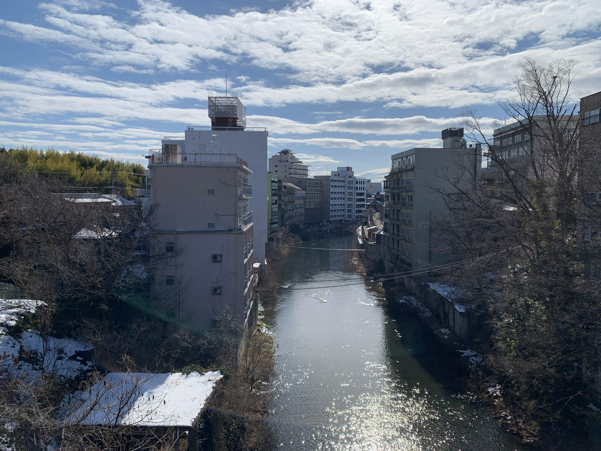
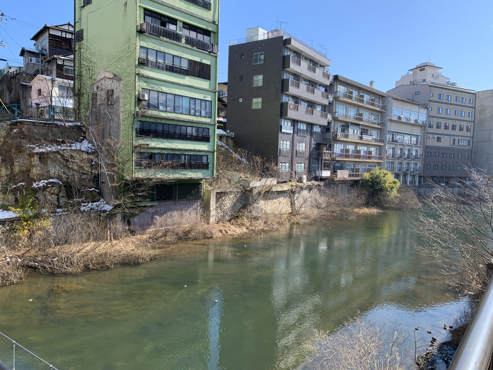
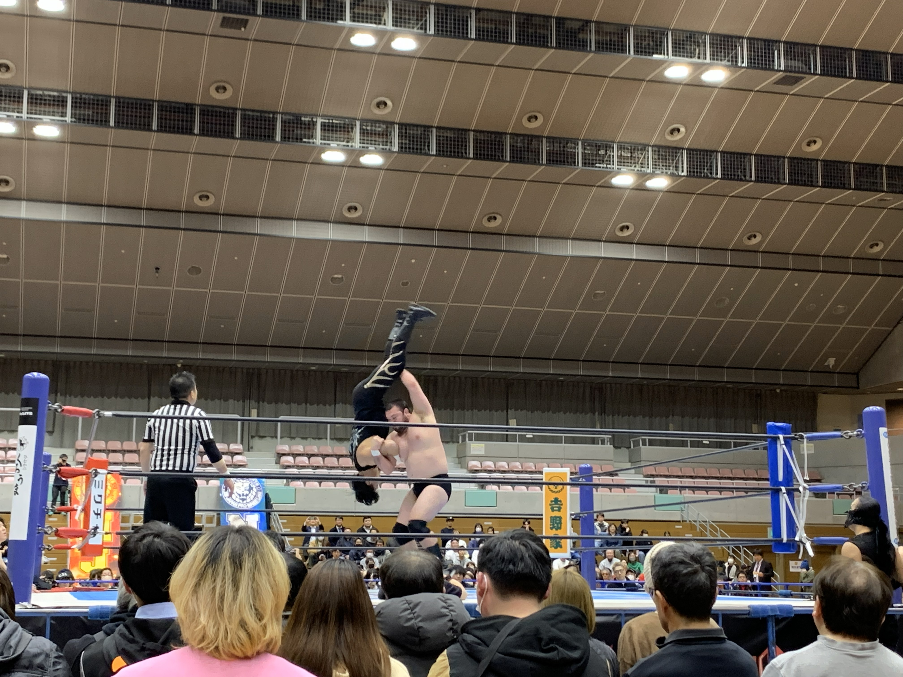
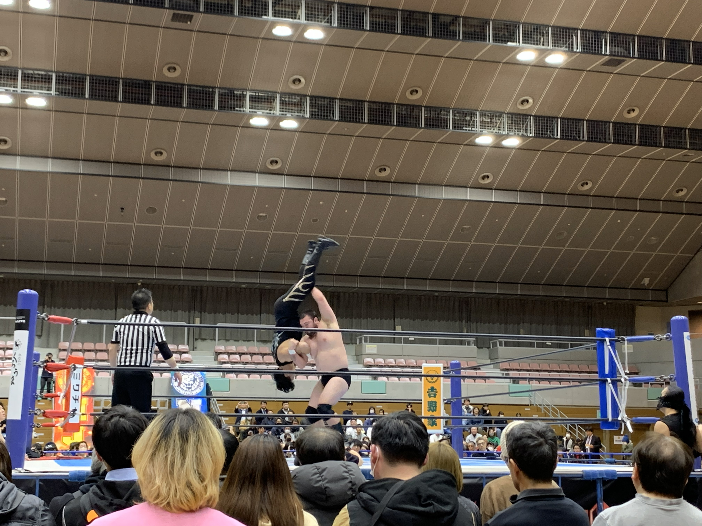

福島市観光 2026
2026/02/04 (水)に福島市に観光に行ってきました。旅程や訪れた町の様子などについて紹介します。
飯坂町
福島駅から北へ行った場所にある飯坂町は温泉で有名らしいです。会津から高速道路で1時間半ほど移動し堀切邸利用者向けの無料駐車場を利用します。
駐車場から少し行った場所にある橋で写真を撮ったら堀切邸へ移動します。足湯があるらしいので楽しみです。
時刻は8時45分、開くのが9時だそうで待ち時間がうまれてしまいました。しかし運よく鯖湖湯が堀切邸の隣にあったので突撃。
なんでも朝6時から開いているようで驚き。中に入ると男湯と女湯は壁で仕切られているものの天井付近で向こうと通じている様子。
歴史を感じる天井を眺めながら熱すぎる湯に浸かった。なんでもかなり熱いほうだそうで常連らしい地元のおっちゃんに許可をもらって水を入れさせてもらいなんとか入浴に成功。
ほかほかになったところで堀切邸に突撃。畳がいい感じだった。無料の足湯もなかなか楽しい。ここで遭遇した老夫婦とは趣味が合うのかこの後も何回か遭遇することになる。
ストーカーの気分になるので勘弁願いたかった。
昼過ぎまでは飯坂町にいる予定だったので他の場所も観光。愛吾公園、変な坂、波来湯、パン屋、和菓子屋、謎の道などあちこち歩いた。
波来湯の隣にある広場のベンチでラノベを読んだが、これがまた最高だった。

この川を舟で下るサービスがあったら絶対盛り上がると思う

廃墟最高！
福島駅周辺
午後は福島駅周辺をぶらぶら。コラッセ福島？である程度お土産を購入したら阿武隈川沿いにある御倉邸に向かう。
距離が距離なので徒歩移動を選択。道中のパン屋さんや羊羹屋さん、和菓子屋さんにも寄りたかったので。
菊谷の羊羹本舗本店ではデカ羊羹1本と最中を1つ買った。最中を1つおまけしてくれた。ありがたくいただいた。
「ちいさなパン屋ble」さんではもうすぐでパンが焼きあがるようだったので待たせてもらうことにした。常連のおじちゃんとお話。
大学生なのだが仕事で来たのか？と聞かれてしまう。クソガキ扱いしてほしいので悲しい。飯坂温泉行ってきたぜ、と話すと乗ってきてくれた。やはり鯖湖湯は熱すぎるらしい。
駒田屋本舗本店ではみそパンを購入。
御倉邸では職員のおばちゃんが丁寧に紹介してくれた。仕事中だったのにも関わらず数十分ほど話し込んだ。申し訳ない。
その後川沿いで最中とかを食べた。お腹一杯だったので晩御飯は抜きにしてそのまま目的であるプロレス観戦のため福島トヨタクラウンアリーナへ向かう。
16時に到着した。かなり時間が余っていたが車内でラノベを読む。18時になってラノベを読めない暗さになったら中へ移動し観戦。
ウルフアロンさんを見て満足したので途中でホテルへ向かった。
翌日は朝一で鳥ヶ崎展望デッキに向かい、景色を楽しんでから会津へ帰った。高速道路で真後ろに警察車両につかれたのは恐ろしかった。
少し赤ランプ点灯された。
 御倉邸の側から見た阿武隈川。青くて綺麗。

一人だけ投げのスピードが異常だった
御倉邸の側から見た阿武隈川。青くて綺麗。

一人だけ投げのスピードが異常だった